Info: Rectangular loop made from 22 mm copper tubing with a butterfly air-variable capacitor.
Conductor: Copper tube 22 mm, connected with sanitary angle fittings and soft-soldered joints.
Capacitor: Air-variable butterfly capacitor 15 pF-240 pF 2kV.
Environment: Indoor, on wooden table, next to brick wall and window. 11th floor under the roof.
Thanks: Many thanks to Carlos for answering all my emails and sending me screenshots of his vna.
| Band | 40m | 20m | |
| Frequency f | MHz | 7.150 | 14.196 |
| C/λ | 1 | 0.08 | 0.17 |
| Calculation accuracy | accurate | moderate | |
| Intrinsic bandwidth Bint | kHz | 70.7 | 285.6 |
| Source of Bint | SWR estimate | ||
| Loop diameter D | m | 1.128 | |
| Conductor diameter d | m | 0.022 | |
| Loop count n | 1 | 1 | |
| Inductance L | H | 2.85e-06 | |
| Capacitance C | pF | 174 | 44.1 |
| Unloaded Q0 | 1 | 101 | 50 |
| Damping resistance RT | Ohm | 1.265 | 5.111 |
| Radiation resistance RR | Ohm | 0.0101 | 0.159 |
| Loss resistance RLoss | Ohm | 1.255 | 4.952 |
| Power to antenna Pfwd | W | 100 | 100 |
| swr_min_ant | 1 | 1.25 | 1.25 |
| etaSWR_ant | % | 98.8 | 98.8 |
| Power antenna load Pload | W | 99 | 99 |
| Antenna efficiency η | % | 0.790 | 3.07 |
| Loop current I rms | A | 8.84 | 4.40 |
| Loop voltage Uloop rms | V | 1131 | 1117 |
| Magnetic dipole moment m | A m² | 8.837 | 4.396 |
| Link to calculator | calculator | calculator | |
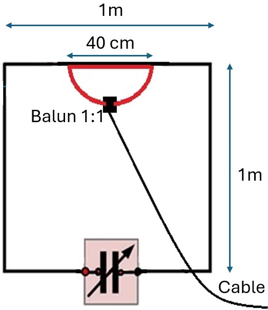
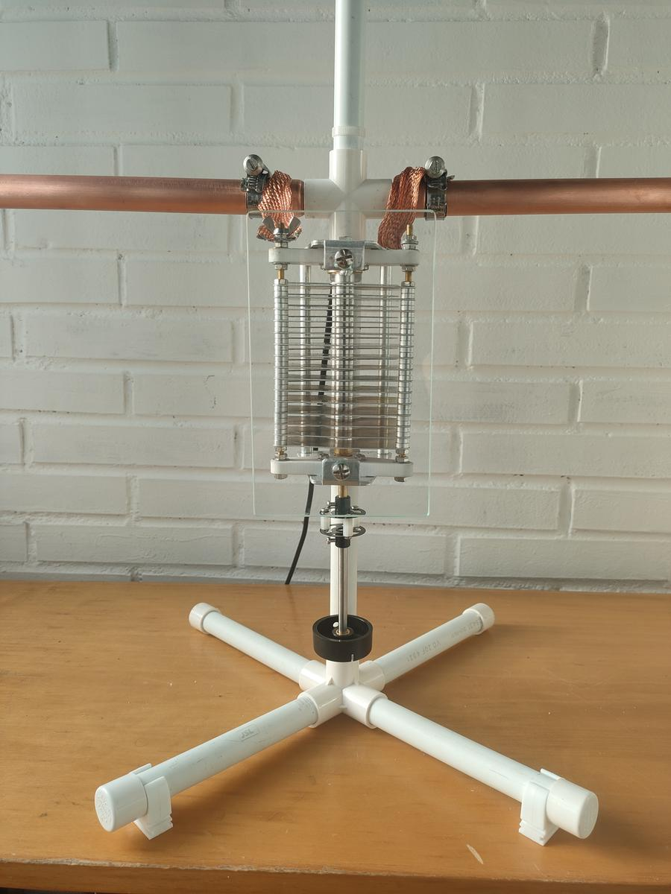
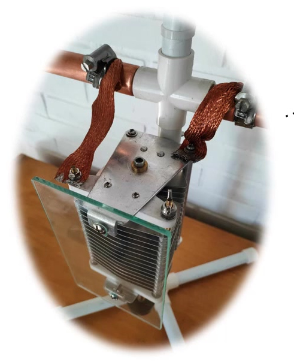
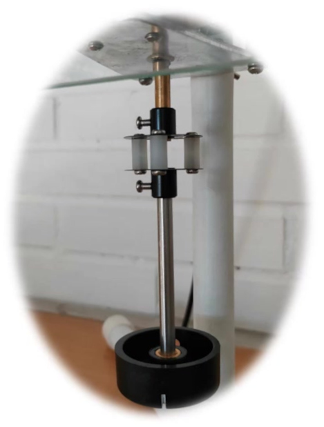
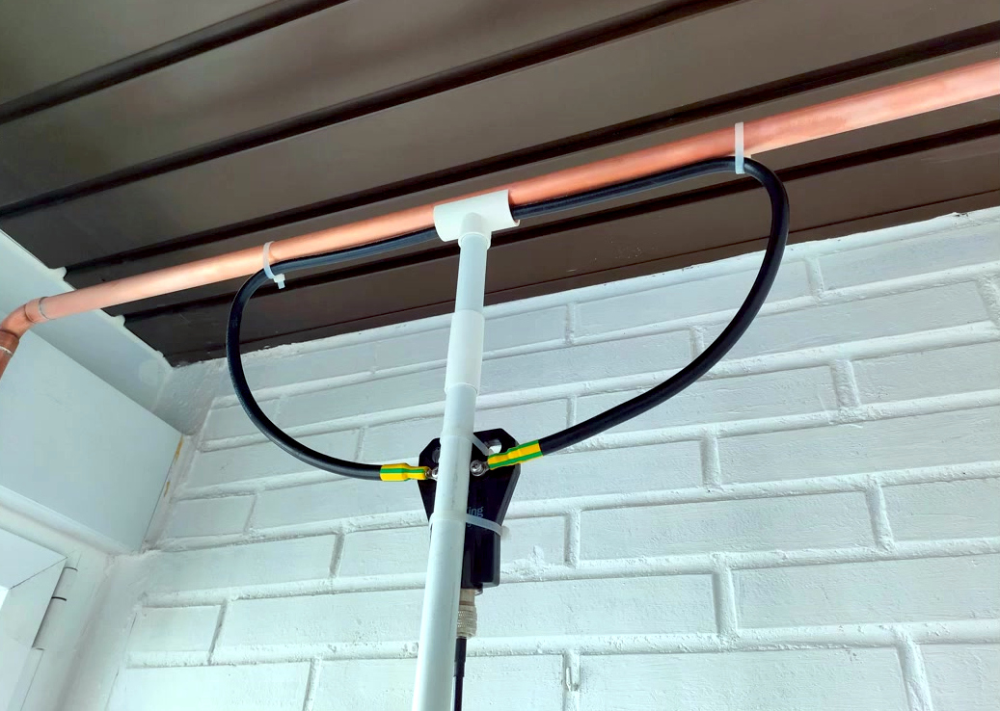
The antenna can be tuned from 40 m to 20 m in the configuration shown here.
With an additional inductance connected in parallel to the capacitor, the antenna can optionally be tuned from 20 m to 10 m.
For this configuration, my calculation methods are not reliable, so I will not go into it further. Anyone interested in this solution can search for EA4AGY; there are several videos by Carlos Almarcha.
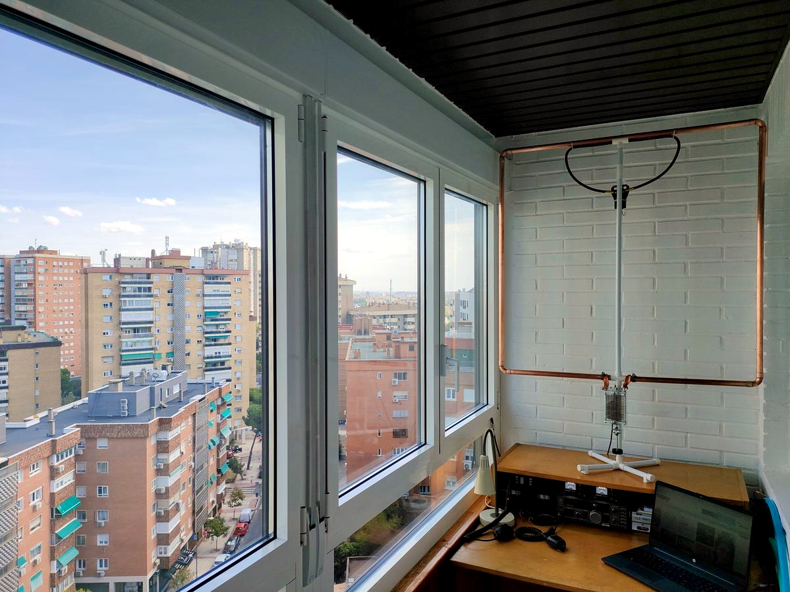
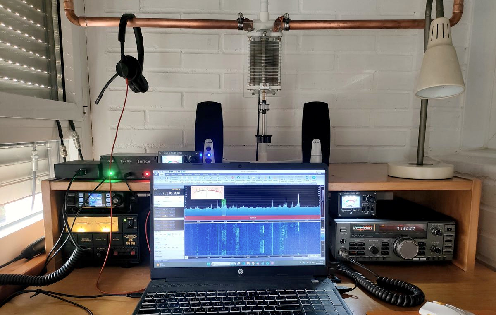
The antenna is located on the 11th floor of a house directly under the roof.
Behind the antenna is a brick wall, with windows on the left and right.
The windows have aluminum frames.
At the top, the main loop is supported against the wall with plastic spacers.
The objects in the immediate vicinity are likely to dampen the antenna quite strongly.
The antenna was measured with a NanoVNA.
I had two SWR screenshots and two Smith chart screenshots available, and I estimated the bandwidth from those images.
No detailed information is available about the cables used, the calibration setup, so the results should be interpreted with caution.
With the SWR alone, there are two possible models for the parallel resonant circuit.
In the SWR plot, the two solutions are shown as Rpar_1 and Rpar_2.
Based on the Smith chart, which in this case is undercoupled, it can be concluded that the first solution with Rpar_1 is the correct one.
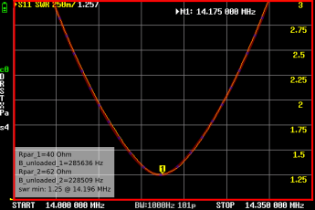
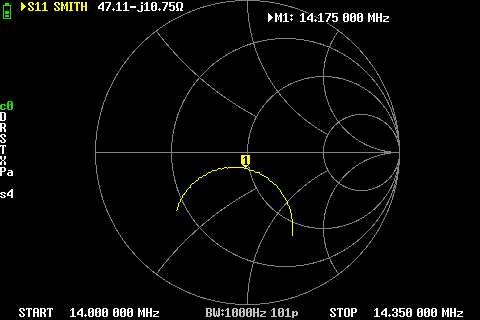
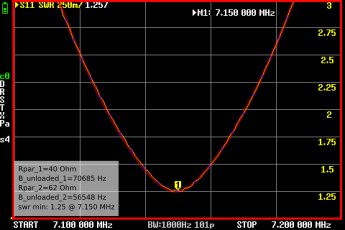
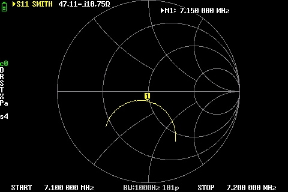
A nice self-built antenna, and the available space is used very efficiently. Such a view while operating is a dream.
The efficiency is probably significantly reduced by the damping caused by the building.
Overview of all Antennas with filter/selection: compare page
Overview of all Antennas static: static compare page
2026 Peter Märki (HB9ISP). This project is created in my free time and has no commercial background. Provided without warranty of any kind. Feedback is welcome.